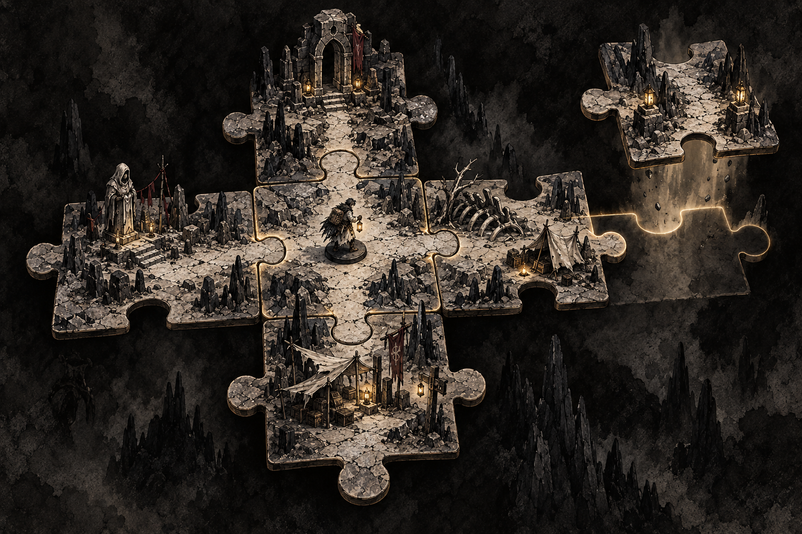
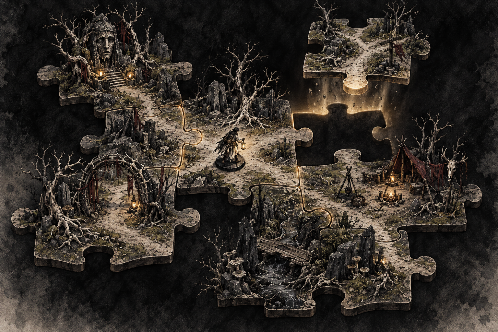
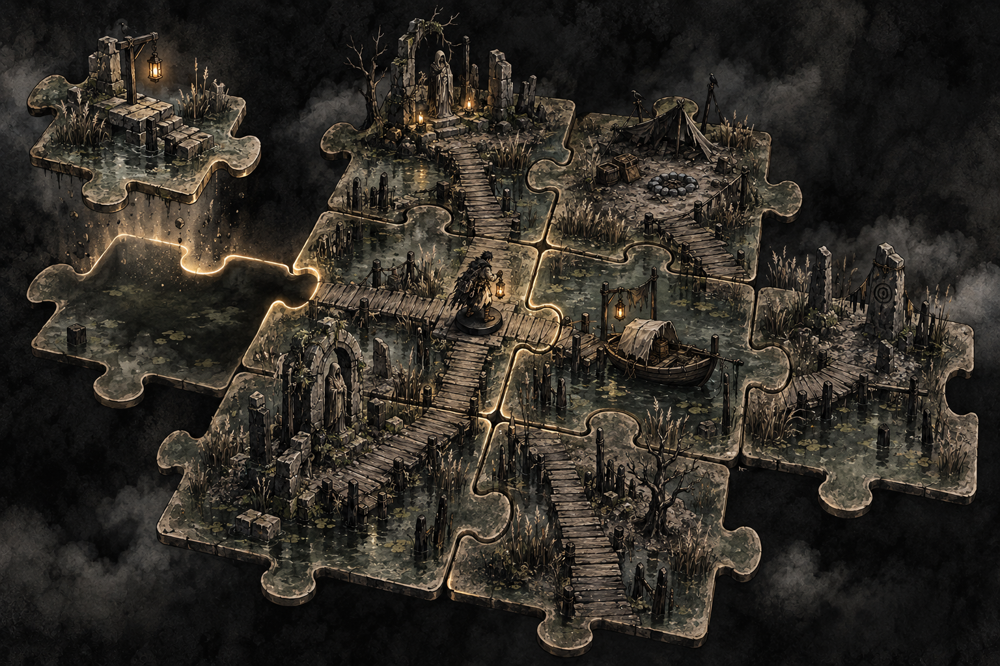
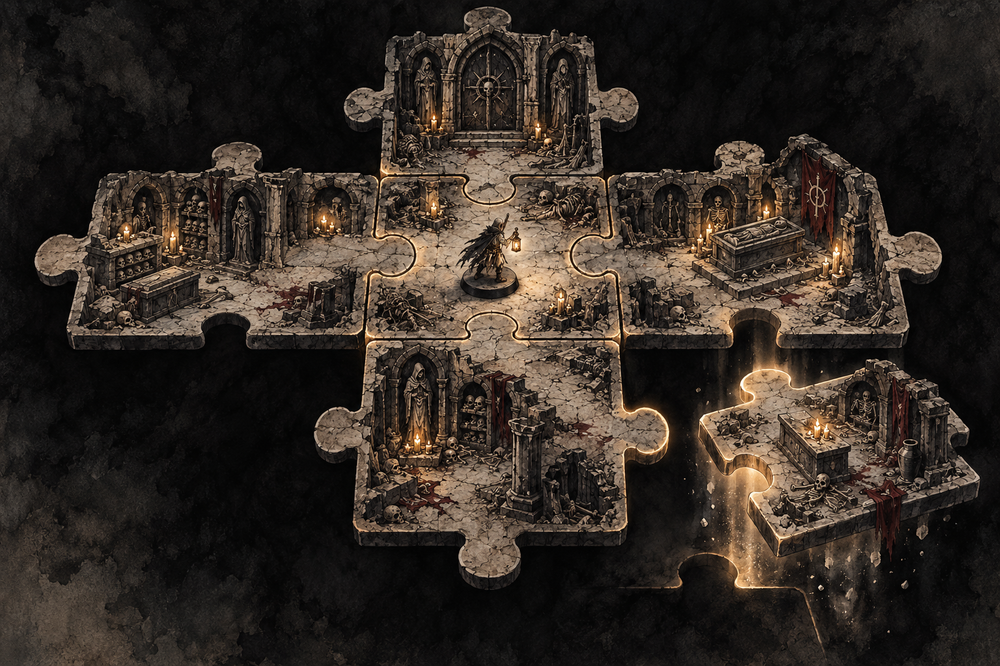
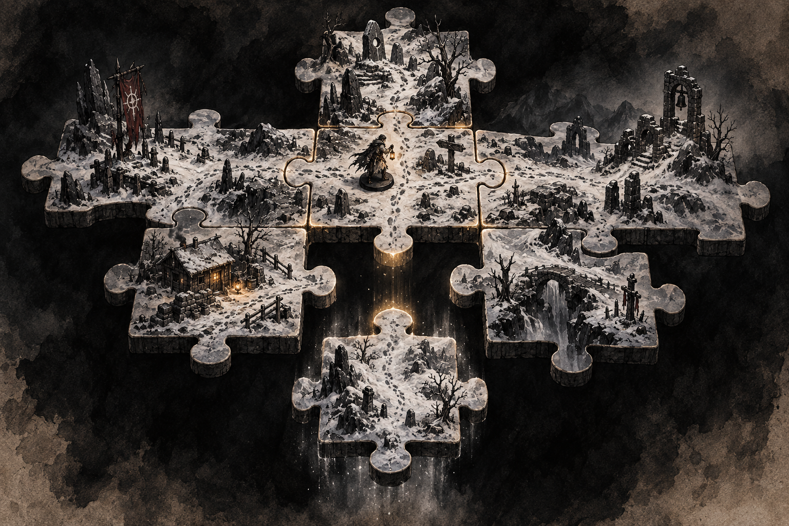
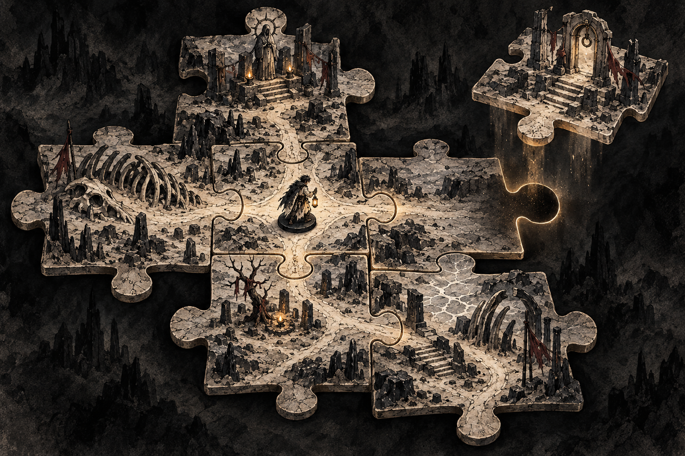
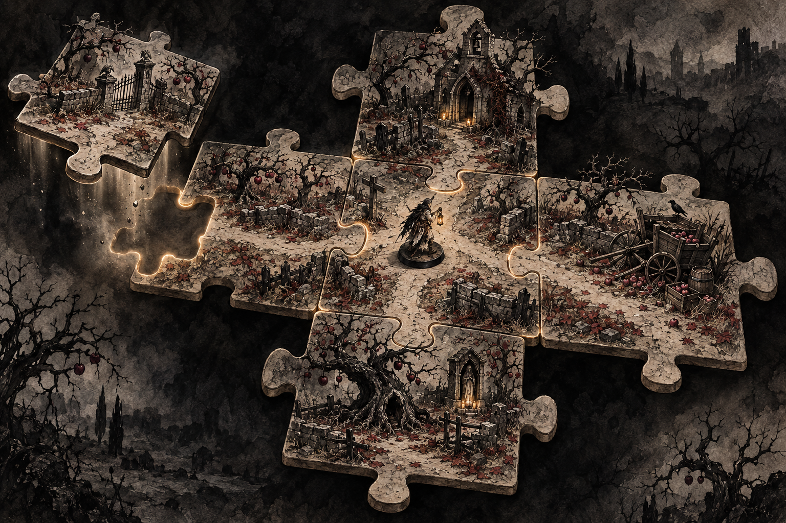
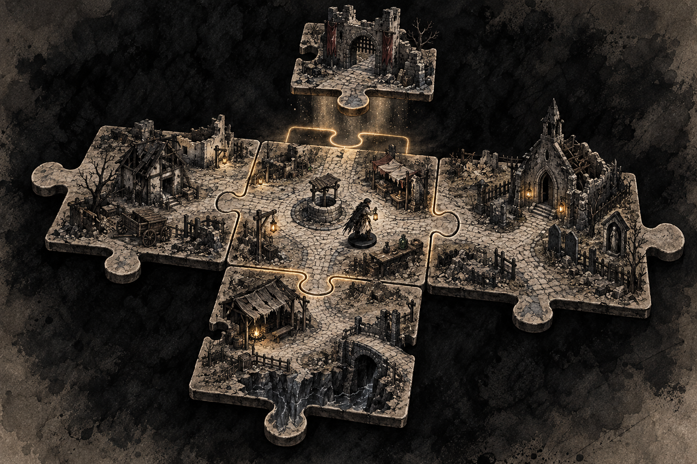
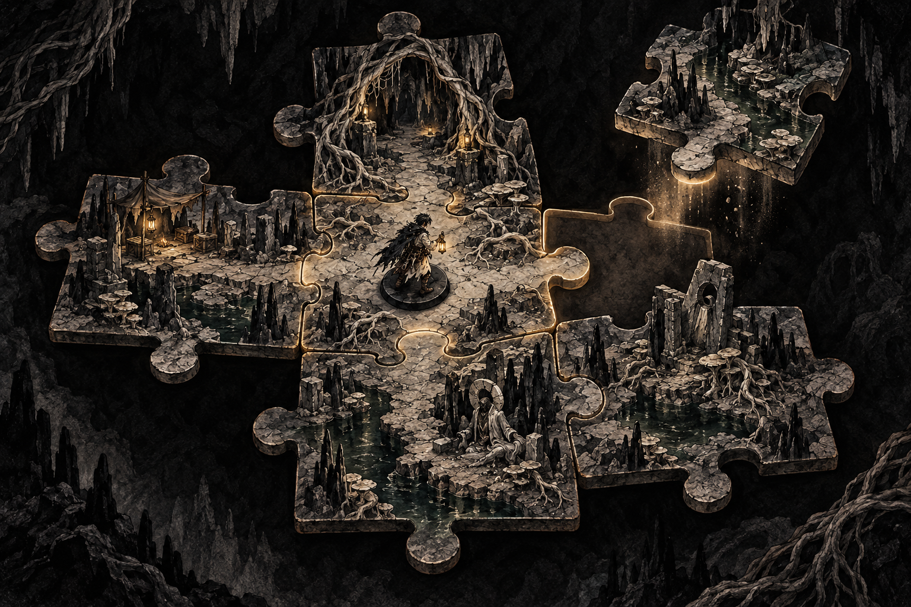
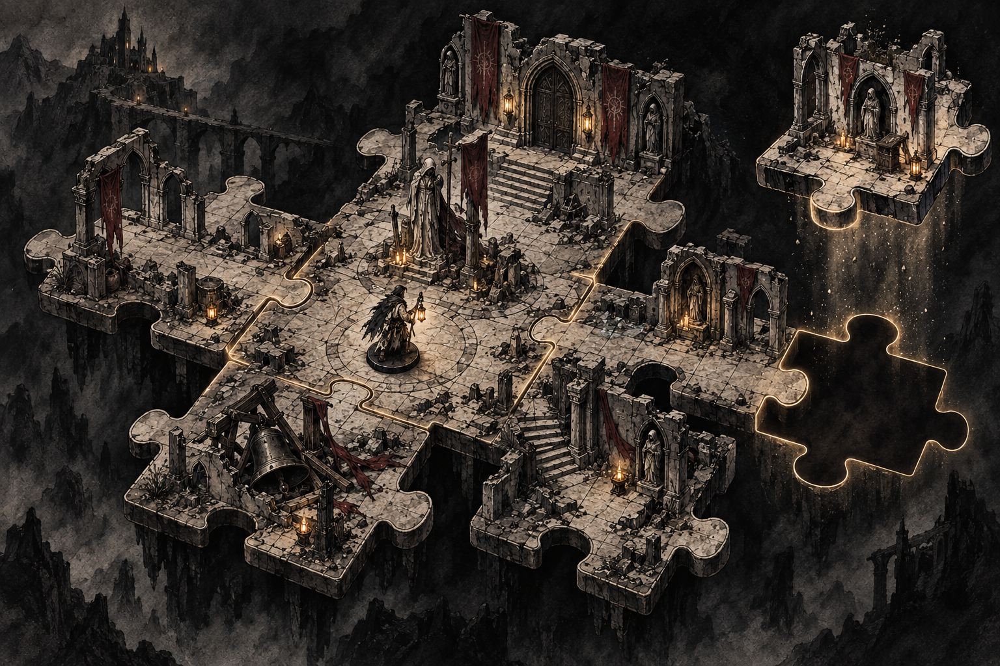

Dice & Destiny — Dark Watercolor Puzzle Maps
Dice & Destiny / Art direction study 02
Ten paths into the dark.
Connected puzzle terrain in ink, ash, bone and watercolor. Each environment follows the existing game's palette and atmosphere while exploring different landmarks and routes. Click an image to inspect it at full resolution.
View the style reference · Generation prompts

01 Ashen expanse

02 Thornwood

03 Drowned fen

04 Ossuary passages

05 Whiteout pilgrimage

06 Salt and bone

07 Carrion orchard

08 Deserted hamlet

09 Hollowroot cavern

10 Fallen monastery